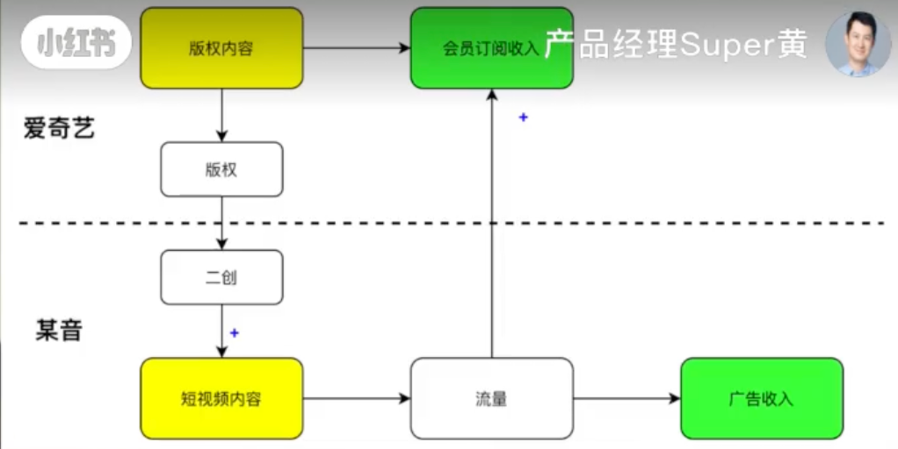

商业分析
Contents
商业分析¶
行业分析¶
企业分析¶
产品分析¶
微信¶
Note
问：为何只有微信不做开屏广告
产品定位角度：微信本身是一款国民级的IM软件，张小龙说过：“你的好朋友是不会见面就在脸上贴一个广告的”；
社交软件的核心点在网络效应：用户使用微信最主要的原因是因为好友都在上面。在打开微信->聊天中插入开屏广告对用户体验的损失会降低微信的网络效应
商业模式角度：
微信：社交网络连接用户的基础上，微信以来公众号、小程序、视频号等渠道连接商家。微信巨大的用户量+额外内容服务获得收益远远比开屏广告更可持续
对比其他产品：
抖音是流量广告的商业模式，开屏广告也会设计成沉浸式内容，广告内容化从而降低用户体验伤害，做到商业价值和用户价值的平衡
潮汐之类的产品在商业模式上采用了增值付费和内容付费等方式，也需要保证用户主要使用路径上的优质体验，再卖好额外的服务和内容来获得商业价值
抖音¶

产品调性¶
「用最高地效率呈现你喜欢的内容」：抖音抓住了这个快餐时代中，用户对短视频的兴趣和喜好，短平快的向用户展现互联网上各类丰富多彩的讯息，使用户不再局限于通过阅读大量文字才能够掌握当今社会的热点。
产品优势¶
用户侧：
UGC正向循环：娱乐内容创作从PGC为主转移到UGC为主
人气 玩的人多所以好玩，用户量大，优质内容也多
搭配了大量简单便捷的工具，让每个用户都能很轻松的创作短视频，无需过多的学习高门槛的视频创作
层出不穷的特效以及音乐等
大量的流量：抖音在现在的互联网定位，是基建。微信是私域和社交的基建，抖音是流量的基建。
产品侧
产品细节的把控能力：
进入到抖音的页面之后，手机右上角的时间就看不到了，这一个小小的设计，就让用户沉浸在其中，非常容易忘记已经用了多久。
层出不穷的特效以及音乐等，活力满满
使用足够简单
年纪大一点的用户角度，入坑抖音几乎不需要任何成本，很轻易的上手去玩乐
算法侧
最先成功的引入基于信息流的快速精准的推荐，较过去很多年的用户画像、协同过滤等推荐更加快速，在短视频领域也更加的及时性和精准
产品局限¶
长期的投食型推荐已经逐渐引起部分用户反感，推荐算法的下一个方向一定是不断的去get用户新的兴趣点，甚至培养用户的兴趣点，新的兴趣点会带来双倍的快乐，还不是重复的推同类型视频
内容剽窃、侵权
**社交属性：**微信是刚需，但抖音是非刚需。本质原因是：私域只有微信，但流量还有很多平台可选。
Note
问：怎么看抖音和长视频平台的版权二创合作
长短视频是可以相互配合的：
长视频主打的是沉浸感、短视频打的是娱乐感
长视频也需要发展短视频生态，因为用户已经对长短视频有了心智和场景的区分：比如中午吃饭就是刷短视频，晚上看网综和电影。
从而，长视频也需要从站外导流，最终通过短视频流量来增加会员订阅收入

公司角度：爱奇艺广告收入逐年下滑、会员营收增加
本质上是商业模式的不同带来了合作的可能性：每个平台专注在自己擅长的范围相互合作
可颂¶
对标小红书：“定义你的生活力”的种草社区型产品
双页展示：对内容的选择权部分交还给了用户（曝光!=浏览）
进攻和探索：用内容社区除了反哺生活向内容生态之外，还可以构建社交网络、延伸到兴趣电商
问题：缺乏社交基因，小红书先发优势巨大、内容供给的密度沉淀很足